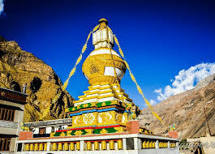
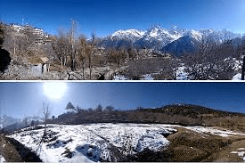

Till 19thcentury, Tourism in Himachal Pradesh was restricted only to alimited movement of pilgrims to a few spiritual destinations in around the hills.Only when the british established their chain of hill stations did tourism recieve recognition in the state. Tourism activity recieved a shot in the arm when British declared Shimla. The Summer Capital of India in 1864 post independence ,more investment in the infrastucture sector led to opening up of tourism in the state.However the biggest boost to tourism occured in the mid 80s and 90s.